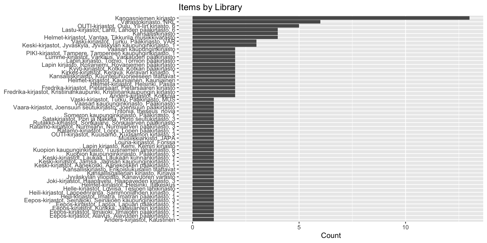
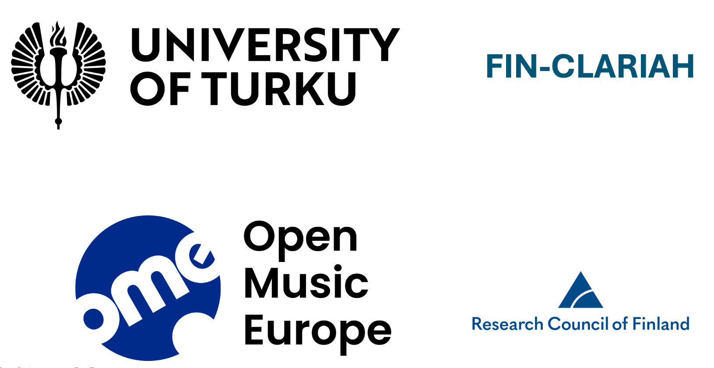

Enhancing Digital Humanities Research in R: Accessing Finnish Cultural Heritage Data with finna and finto
Akewak Jeba, Julia Matveeva, Leo Lahti
Introduction
- Cultural heritage data is rich, but underused
- Structured metadata reveals cultural trends
- R packages finna and finto bring this data to researchers
- Enable metadata search, enrichment, and analysis in R
Motivation – Challenges
- Cultural metadata is often:
- Scattered across systems
- Lacking semantic structure and conceptual links
- Inconsistent and not readily available in R
- Scattered across systems
Motivation – Opportunities
- National services like Finna and Finto offer:
- 9M+ cultural heritage records
- Vocabularies and AI tools for subject enrichment
- 9M+ cultural heritage records
- Our
finnaandfintoR packages:- Bring these services into R
- Enable reproducible, semantically enriched workflows
- Support deeper, structured digital humanities research
- Bring these services into R
What is Finna?
- National search platform
- Covers libraries, museums, archives
- Open API for metadata access
- Search by keyword, author, subject
- Accessed via the finna R package

What is Finto?
- Vocabulary and ontology service (NLF)
- 50+ domain vocabularies
- Key vocabularies:
- YSO – General topics
- KAUNO – Fiction
- KANTO – Author names
- YSO – General topics
- Finto AI suggests subjects
- Accessed via the finto R package

Package Installation
Load software packages
Searching Finna
# A tibble: 6 × 10
id Title Author Year Language Formats Subjects Library Series last_indexed
<chr> <chr> <chr> <chr> <chr> <chr> <chr> <chr> <chr> <chr>
1 vaar… Expr… <NA> 2009 eng Äänite… 2000-20… Varast… <NA> <NA>
2 kang… MUSI… MUSIC 1999 mul Äänite… AFRIKKA… Kangas… THE R… <NA>
3 vask… The … Music 2002 eng Äänite… <NA> Vaski-… <NA> <NA>
4 kang… MUSI… MUSIC 1980 <NA> Äänite… <NA> Kangas… <NA> <NA>
5 kang… MUSI… MUSIC 1997 eng Äänite… <NA> Kangas… <NA> <NA>
6 vask… Welc… <NA> 2004 eng Äänite… <NA> Vaski-… <NA> <NA> Visualizing Metadata
Enriching with KANTO
| melinda_id | leader | 008 | author_name | author_date | author_ID | language | language_original | title_uniform | title | title_remainder | publication_place | publisher | physical_dimensions | physical_extent | publication_frequency | publication_interval | signum | location_852 | UDK | UDK_aux | 245n | genre_655 | 650a | general_note | 700a | 700_0 | a.15 | |
|---|---|---|---|---|---|---|---|---|---|---|---|---|---|---|---|---|---|---|---|---|---|---|---|---|---|---|---|---|
| 295 | 000864513 | 00000cam a2200493 i 4500 | 970630s1913 fi |||||||||||||||||swe| | Grotenfelt, Gösta, | 1855-1922. | (FIN11)000087893 | (FIN11)000075766 | swe | Sockerbetan såsom foderväxt / | Helsingfors : | Senaten, | 5 s. | Maanviljelys 2B -1972 | Från afdelningen för växtkultur. | Relander, Lauri Kristian, | ||||||||||||||
| 296 | 000864514 | 00000cam a2200445 i 4500 | 970630s1913 fi |||||||||||||||||swe| | Liro, J. I., | 1872-1943. | (FIN11)000081894 | swe | Om klumprotsjuka å kålväxter / | Helsingfors : | Senaten, | 6 s. | Maanviljelys 2B -1972 | Växtpatologiska afdelningen. | |||||||||||||||
| 297 | 000864515 | 00000cam a2200457 i 4500 | 970630s1913 fi |||||||||||||||||swe| | Grotenfelt, Gösta, | 1855-1922. | (FIN11)000087893 | swe | Korta anvisningar för våra odlare af sockerbetor / | Helsingfors : | Senaten, | 5 s. | Maanviljelys 2B -1972 | Från afdelningen för växtkultur. | |||||||||||||||
| 298 | 000864516 | 00000cam a2200445 i 4500 | 970630s1913 fi |||||||||||||||||swe| | Relander, Lauri Kristian, | 1883-1942. | (FIN11)000075766 | swe | Några resultat från hafresortsförsöken å Ånäs under åren 1909-1912 / | Helsingfors : | Senaten, | 9 s. | Maanviljelys 2B -1972 | Växtkulturafdelningen. | |||||||||||||||
| 299 | 000864517 | 00000cas a2200949 i 4500 | 970630c19979999fi q||p| |||||||||b0fin| | fin | Talvisodan henki ja perintö / | Helsinki : | Suomen talvisotajulkaisut, | 27 cm | Neljä kertaa vuodessa | 1996, 3- | Aa2 ; Aa3 2004- | 355/359 | tiedotuslehdet|kausijulkaisut|aikakauslehdet|periodika|tidskrifter|informationsblad | sotahistoria|krigshistoria | Julkaisijana 1997, 2- myös: Suomen talvisodan veteraanien tukiyhdistys 105 ry ja kustantajana: Suomen talvisodan veteraani- ja perinnetyön tuki 105 oy; kustantajan nimenä myöhemmin: Suomen 105 oy. | |||||||||||||
| 300 | 000864518 | 00000cam a2200445 i 4500 | 970630s1913 fi |||||||||||||||||swe| | Relander, Lauri Kristian, | 1883-1942. | (FIN11)000075766 | swe | Försök angående hafrens lämpligaste såningstid och agrikultur-ekonomiska försöksanstaltens utsädesmängd på Ånäs under åren 1910-1912 / | Helsingfors : | Senaten, | 4 s. | Maanviljelys 2B -1972 | Från afdelningen för växtkultur. |
Enriching with KANTO
# Load a sample dataset
fennica_subset <- tail(fennica_subset)
# Enrich authors with Kanto info
authors_kanto <- finto::get_kanto(fennica_subset)
knitr::kable(head(authors_kanto))| author_ID | uri | type | prefLabel | altLabel | hiddenLabel | broader | narrower | related | definition | scopeNote | example | historyNote | editorialNote | changeNote | profession | birthDate | deathDate | exactMatch | closeMatch | inScheme | created | modified | profession_metadata_profession_uri | profession_metadata_profession_prefLabel_en | profession_metadata_profession_prefLabel_fi | profession_metadata_profession_prefLabel_sv | profession_metadata_profession_entryTerms | profession_metadata_profession_belongsToGroup | profession_metadata_profession_broader | profession_metadata_profession_narrower | profession_metadata_profession_related | profession_metadata_profession_created | profession_metadata_profession_modified | profession_metadata_profession_closeMatch | profession_metadata_profession_source | profession_metadata_profession_downloadFormats | profession_metadata_uri | profession_labels |
|---|---|---|---|---|---|---|---|---|---|---|---|---|---|---|---|---|---|---|---|---|---|---|---|---|---|---|---|---|---|---|---|---|---|---|---|---|---|---|
| 000087893 | http://urn.fi/URN:NBN:fi:au:finaf:000087893 | http://rdaregistry.info/Elements/c/C10004, skos:Concept | Grotenfelt, Gösta, 1855-1922 | NA | NA | NA | NA | NA | NA | NA | NA | NA | NA | NA | http://urn.fi/URN:NBN:fi:au:mts:m3368 | 1855 | 1922 | NA | http://urn.fi/urn:nbn:fi:sks-kbg-003201 | http://urn.fi/URN:NBN:fi:au:finaf: | 1997-09-08 | 2025-02-19T18:37:11 | http://urn.fi/URN:NBN:fi:au:mts:m3368 | NA | professori | professor | professor (yrke), professori (ammatti) | http://urn.fi/URN:NBN:fi:au:mts: | NA | NA | NA | 2018-11-01 | 2024-08-27 | http://www.yso.fi/onto/yso/p17044 | ALLFO-term, YSO-termi, Kansallinen RDA-termi, Nationell RDA-term | RDF/XML, TURTLE, JSON-LD | NA | NA |
| 000081894 | http://urn.fi/URN:NBN:fi:au:finaf:000081894 | skos:Concept, http://rdaregistry.info/Elements/c/C10004 | Liro, J. I., 1872-1943 | NA | NA | NA | NA | NA | NA | NA | NA | NA | NA | NA | NA | 1872 | 1943 | NA | http://urn.fi/urn:nbn:fi:sks-kbg-007261 | http://urn.fi/URN:NBN:fi:au:finaf: | 1996-08-01 | 2023-04-20T12:32:10 | NA | NA | NA | NA | NA | NA | NA | NA | NA | NA | NA | NA | NA | NA | NA | NA |
| 000075766 | http://urn.fi/URN:NBN:fi:au:finaf:000075766 | skos:Concept, http://rdaregistry.info/Elements/c/C10004 | Relander, Lauri Kristian, 1883-1942 | NA | NA | NA | NA | NA | NA | NA | NA | NA | NA | NA | NA | 1883 | 1942 | NA | http://urn.fi/urn:nbn:fi:sks-kbg-000628 | http://urn.fi/URN:NBN:fi:au:finaf: | 1992-10-05 | 2023-04-20T12:27:32 | NA | NA | NA | NA | NA | NA | NA | NA | NA | NA | NA | NA | NA | NA | NA | NA |
Finto AI for Subject Indexing
# Annotate a short text with YSO concepts
text <- "climate change and biodiversity loss"
suggest_subjects(text, project = "yso-fi")# A tibble: 10 × 3
label uri score
<chr> <chr> <dbl>
1 climate changes http://www.yso.fi/onto/yso/p5729 0.285
2 natural diversity http://www.yso.fi/onto/yso/p5497 0.229
3 climate http://www.yso.fi/onto/yso/p5639 0.227
4 biodiversity http://www.yso.fi/onto/yso/p5496 0.179
5 living environment http://www.yso.fi/onto/yso/p14074 0.145
6 pasture rearing http://www.yso.fi/onto/yso/p11434 0.132
7 sustainable development http://www.yso.fi/onto/yso/p8470 0.126
8 nature conservation http://www.yso.fi/onto/yso/p11 0.0928
9 environmental education http://www.yso.fi/onto/yso/p14751 0.0856
10 international environmental law http://www.yso.fi/onto/yso/p5970 0.0777Finto AI for Subject Indexing
hierarchy <- get_hierarchy(vocid = "yso", uri = "http://www.yso.fi/onto/yso/p5729", lang = "en")
print(hierarchy)# A tibble: 162 × 4
uri broader prefLabel hasChildren
<chr> <chr> <chr> <lgl>
1 http://www.yso.fi/onto/yso/p277 <NA> change NA
2 http://www.yso.fi/onto/yso/p11052 http://www.yso.fi/on… change FALSE
3 http://www.yso.fi/onto/yso/p25030 http://www.yso.fi/on… change FALSE
4 http://www.yso.fi/onto/yso/p2954 http://www.yso.fi/on… change FALSE
5 http://www.yso.fi/onto/yso/p22295 http://www.yso.fi/on… change FALSE
6 http://www.yso.fi/onto/yso/p3786 http://www.yso.fi/on… change FALSE
7 http://www.yso.fi/onto/yso/p7283 http://www.yso.fi/on… change FALSE
8 http://www.yso.fi/onto/yso/p26968 http://www.yso.fi/on… change FALSE
9 http://www.yso.fi/onto/yso/p8957 http://www.yso.fi/on… change FALSE
10 http://www.yso.fi/onto/yso/p11509 http://www.yso.fi/on… change FALSE
# ℹ 152 more rowsfinna – Search and retrieve cultural metadata
finto – Add semantic vocabularies and subjects
Works fully in R workflows
Enables scalable digital humanities research
Questions ?
